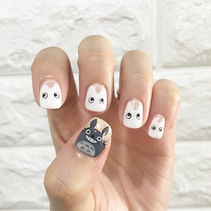
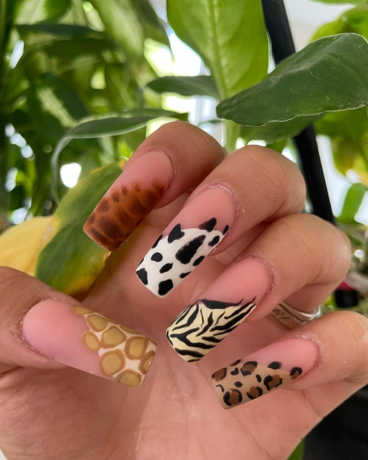

Estilos
Degradé

Consiste en combinar esmaltes de colores de la misma gama o contraste esfumando la unión entre ellos.
Este estilo tiene variaciones:
- Ombré
- Degradado
- Gradiente
Jelly

En este estilo los colores elegidos son translucidos dejando ver la uña.
Esta característica se asemeja a las gomas masticables y la gelatina, lo que da origen a su nombre.
Geométrico
Aquí podemos agrupar distintos diseños donde se realizan lineas y se divide la uña en diferentes partes combinando colores y a veces técnicas como papel dorado, o cintas de colores.
Animal Print
¿Podés imaginarte tus uñas con un estampado de leopardo?
Con esta técnia no solo podes tenerlo sino que puede ser de muchos otros estampados animales como:
- Tigre
- Leopardo
- Cebra
- Carey
- Serpiente
Cromados

En esta técnica se utilizan polvos con acabado cromado, lo que genera variaciones de tono causadas por el impacto de la luz que las hace muy llamativas.
Dentro de ellas tenemos las clásicas esfecto espejo que reflejan la luz dando esa sensacion de espejo.
También tenemos las duo cromo en las que se reflejan varios colores contrastantes, dependiendo de como le de la luz.
Animé y Manga

- Animé:
- aquí se realiza el dibujo con el estilo japones de las series que podemos ver en la televisión. Puede ser cualquiera. Tenemos por ejemplo Dragon Ball,Naruto, Death Note, Sakura entre muchos otros.
- Manga:
- este estilo es similar pero los dibujos son del estilo de las historietas japones donde se realizan los detalles en la gama de blancos y negros para realizar las las lineas definidas como las sombras y luces.